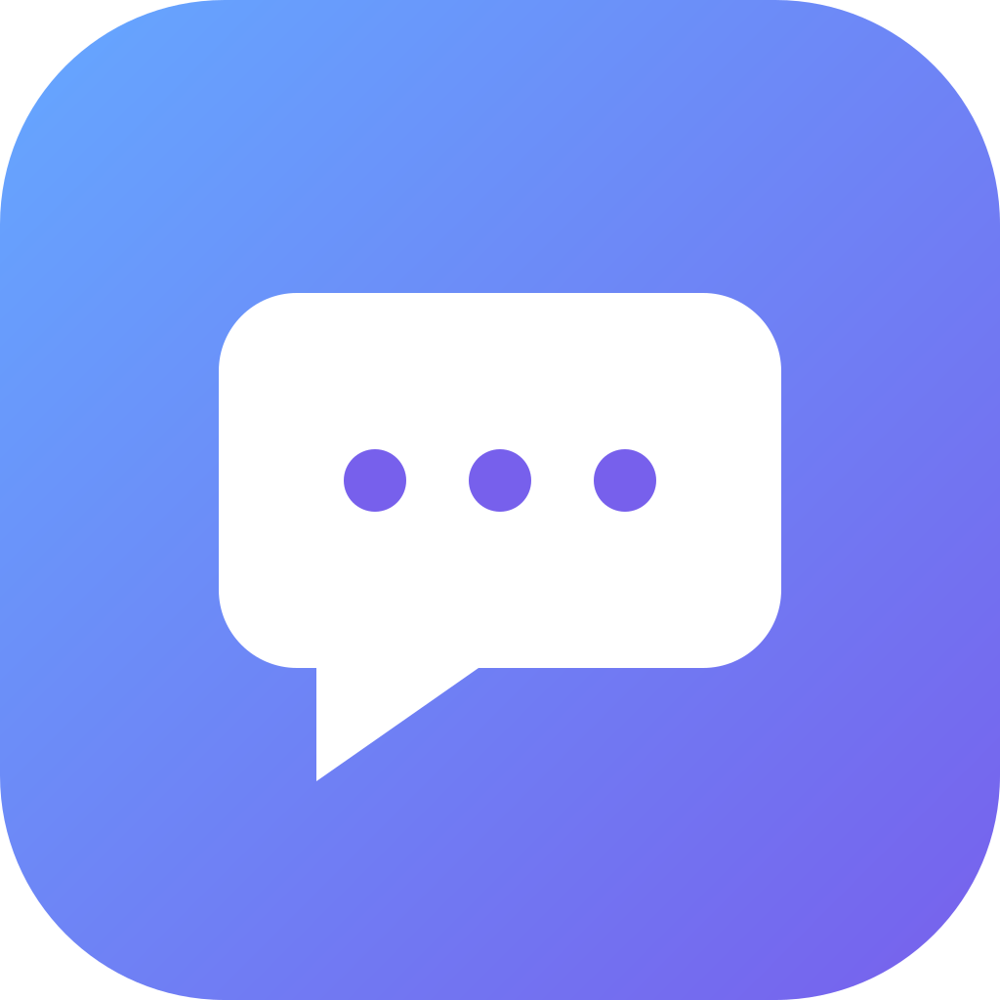

Find the thread.
Search messages, read unread chats, and pick up where you left off across your connected accounts.

Beeper Personal MCPA personal bridge. Open source.
Bring the conversations in Beeper to your assistant. Catch up, find that message, and reply when you’re ready.
Self-hosted · MIT licensed · Made for your own account
WhatsApp · Telegram · Signal · Messenger · and your other connected networks
SMALL BY DESIGN
Search messages, read unread chats, and pick up where you left off across your connected accounts.
Keep it local, use a private OpenAI tunnel, or bring your own HTTPS endpoint. Cloudflare is optional.
Start with read access. Public OAuth connections can require your approval for each message. Private tunnel writes are a separate opt-in.
MAKE IT YOURS
Node.js 20.19+, npm, Git, and a Beeper account.
Linux is the validated platform; use WSL on Windows.
Use OpenAI’s Secure MCP Tunnel to reach your local Beeper gateway without a public hostname or an app-level OAuth login.
First install the official tunnel-client and create a tunnel in OpenAI Platform. You need a runtime key and permission to use that tunnel.
git clone https://github.com/edouaz/beeper-personal-mcp.git
cd beeper-personal-mcp
./bin/setup --mode openaiThe assistant installs dependencies, signs you in to Beeper, and launches the tunnel. Enter your tunnel ID when asked; the runtime key is hidden and stays in memory. Then select Tunnel in ChatGPT and choose No authentication.
Next time, just run npm start. Credentials stay in your private state/ directory. Never share it.
A PERSONAL CONNECTION
The gateway runs on your machine. The messages you request are shared with the assistant you connect. Your Beeper credentials and conversation history never belong in this public repository.
Understand the security modelA LITTLE IDENTITY
The same little bubble, ready for your personal app.
Original artwork, available under the MIT license.
One app icon. A quieter composer mark.
Square SVG originals and transparent PNG exports. Checked for dimensions and file size against OpenAI’s published icon rules.
Includes a light/dark composer mark and manifest example. Asset validation doesn’t imply OpenAI review or endorsement.
GOOD TO KNOW
No. Local mode needs neither. OpenAI Secure MCP Tunnel also works without a public hostname. Cloudflare is just one optional way to expose an HTTPS endpoint.
No. The private OpenAI path uses tunnel permissions and a runtime key. It skips an app-level OAuth flow because the MCP server is reached through a private pipe. Public HTTPS modes continue to require OAuth.
Yes, when you explicitly enable writes. Public OAuth mode supports individual message approval. OpenAI tunnel mode starts read-only; enabling writes allows direct actions, so keep your client’s action confirmations enabled. Never retry a send with an unknown outcome.
Secure MCP Tunnel is for private connections and testing. Public plugin distribution needs a stable, publicly reachable HTTPS MCP endpoint and the applicable OpenAI review requirements. Making this repository public does not publish your private Beeper connection.
No. This is an independent community project, not affiliated with Beeper, OpenAI or Apple. Beeper Server is downloaded by the official Beeper CLI and is not redistributed here. Network support depends on your Beeper account and connected services.